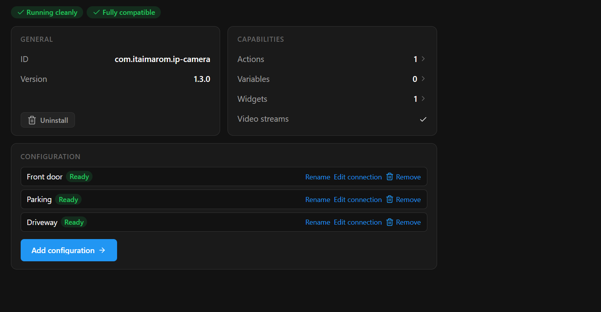

Every camera
in one place
State, capabilities and Retry on the plugin's own page, without opening a widget.
Each camera shows Ready while it streams; a failed one offers Retry.
State, capabilities and Retry on the plugin's own page, without opening a widget.
Each camera shows Ready while it streams; a failed one offers Retry.
